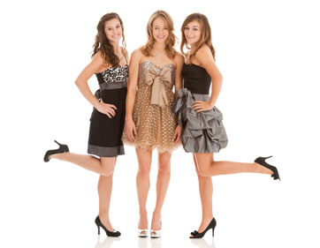

Alterations, Fashion, & Housewares
Wedding and Formal Wear
Olga in her wedding dress
We can make wedding dresses from scratch from a pattern. However, look at a bridal store first, as it is easier to conceive what the dress will look like. Also ready-made dresses may be less expensive. Bridalwear fabric can be expensive, so it is best to get a quote: custom vs. ready-made.
We can make alterations and also reshape a dress to your preference. This is an excellent option.
I bought my dress from a close-out for $99, and made some alterations in the bodice and train and it looked great.
We are experienced in plus size dresses, or if you are not a standard size.
Bridesmaid's dresses are popular with us. We can help you choose a fabric and pattern. Then each of the bridesmaids can have a custom fitting at their own schedule, and they will all look perfect as a group. If preferred, we can charge each bridesmaid individually for her dress. For your budgetplanning, for each dress, estimate $60 to $100- plus fabric and zipper. This estimate includes the lining.
For bridal wear, often adjusting a ready-made dress is the best choice.
Women's and Girl's Dresses

We will make a dress from a pattern. Please discuss the pattern and choice of fabric with us. We can meet with you at the fabric store to help choose the best combination of pattern and fabric to fit the occasion and your body style. Some fabrics do not work with some patterns.
Fabric is expensive, so often you can buy a ready-made dress for less than a custom made dress.
For dresses, budget $60 to $100 plus fabric and zipper. For long formal gowns, budget $120.
We do not make tailored jackets or pantsuits from scratch, but of course we can remodel and alter tailored clothes.
We are very comfortable with making and altering plus size clothes.
For girls' dresses, let us help with special designs, such as matching a bridesmaids' collection. For every day wear, it is usually less expensive to buy girls dresses ready-made.
Women's and Girls Alterations

This is our main work. From reshaping formal gowns to hemming jeans, this is what we do most.
Prices will vary with the work, but here are some guidelines:
Hem jeans or slacks $10 + $5 for cuffs
Replace zipper on pants $15 - $20
Replace zipper on dress $25
Shorten skirt $10 + $5 if there is a lining
Narrow waist $15 - $30
Reshape bodice or skirt $20 - $40
We charge our cost for zippers. For anoraks, cold weather jackets, etc. you need very good quality zippers. Budget $5 to $10 for a regular zipper depending on the length, $10 for an anorak zipper, and $15 for a sleeping bag zipper.
Men's and Boy's Alterations and Repairs

Most popular is hemming jeans or trousers. The price is $10 without cuffs, and $15 with cuffs.
We can also let out the waist on pants if there is enough fabric in the seam. We can replace zippers, buttons, etc.
For quick repairs budget $5 to $10. Note that for jackets, we often have to undo the lining to make the repair and then rework the lining, so a little extra.
Prices will vary with the work, but here are some guidelines:
Hem pants, no cuffs $10
Hem pants with cuffs $15
Replace button $5
Sew small seams $5
Patch jeans $5 - $15
Sew badges $5 (discount if several badges)
Shorten jacket sleeves $25 (may vary)
We charge our cost for zippers. For anoraks, cold weather jackets, etc. you need very good quality zippers. Budget $5 for a regular zipper, $10 for an anorak zipper, and $15 for a sleeping bag zipper.
We do not make shirts, trousers, or suits from scratch.
Cushions and Pillows
We can recover cushions with your fabric. This is very popular in order to match furniture and curtains, etc.
These are the prices for a single item. We give a discount for several similar items done at the same time, for example a patio cushion set. For indoor pillows, budget $15 for small pillows, $20 medium, and $30 for large pillows.
In Phoenix, the sun destroys patio cushions and we can recover those for you.
The price will depend a little on the work, but for small cushions, budget $30 each. For larger cushions budget $15-$20 each.
Piping is very attractive and is an extra $15 per cushion on average.
Larger cushions may need a special upholstery zipper, which we charge at our cost. Budget $15 each cushion. The piping beading we also charge at our cost.
Please call us at 310-721-4050 to discuss your requirements.
We can sew most awning, umbrella and patio cushion fabric. We do not work with leather or very heavy fabric, which requires a special upholstery machine.
Curtains
Let us discuss your ideas before you buy the fabric. Surprisingly, it may be less expensive to buy ready-made curtains and let us make changes. Curtain fabric is expensive.
You can have a great result from ordinary "Bed, Bath and Beyond" curtains, and let us add a lining, and make custom changes to give you that designer look.
You can also buy a "ready to sew" curtain set from Joanne's Fabrics, etc. We can meet you there.
These are the prices for a single item. We give a discount for several similar items done at the same time, for example curtains for a whole room.
For a simple single lined curtain, made from scratch, with standard width 52”-54” budget as follows: small (length 63” – 83”) $30; medium (length 63” – 96”) $35; long (length 96” – 120”) $40 per curtain plus fabric.
Lining is $20 extra; pleats $20 extra per curtain.
To shorten and hem a curtain, budget $10.
We can do fancy curtains, including swags, jabots, and valances. However, these require a lot of work and can be expensive. We can consult with you and also compare your requirements to offerings from online specialist curtain suppliers.
For a simple single lined curtain, made from scratch, budget $30 per curtain plus fabric.
Interior Designers
We welcome custom work from interior designers. Let us help you with that special color, shape, or fabric for cushions, curtains, table cloths, etc.
Accent color cushions and curtains can liven up some of our functional but unexciting Phoenix architecture.
Upholstery
Patio furniture and items for boats, etc. are popular – the Phoenix sun destroys outside fabrics.
We can do cushions, skirts for chairs, table cloths and special drapes.
We can repair cushions, etc.
We do not recover sofas.
We can sew most awning, umbrella and patio cushion fabric. We do not sew leather or very heavy fabric, which requires a special upholstery machine.
Special Projects
Please contact us for repairs to tents and sleeping bags, remaking or repairing awnings, quilts, etc.